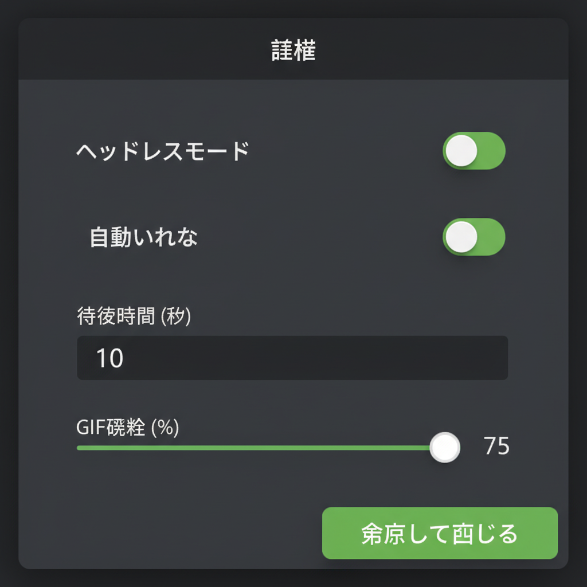

X自動投稿アプリ 操作マニュアル (v1.6)

1. はじめに
本アプリは、設定されたX（旧Twitter）アカウントを使用して、自動的にポスト（ツイート）を行うデスクトップアプリケーションです。
v1.6では、AIペルソナ機能、単体実行機能、いいね数の範囲指定などが追加されました。
注意: 本アプリを使用する際は、必ずインターネットに接続してください。
2. 画面構成
アプリを起動すると、以下のメイン画面が表示されます。

- サイドバー（左側）: 操作ボタン、バージョン情報、設定ボタンがあります。
- ログタブ（右側）: 動作ログが表示されます。
- アカウント一覧タブ（右側）: 各アカウントのステータスと最終実行時間が表示されます。
3. 事前準備 (アカウントリストの作成)
アプリを動かすために、アカウント情報が書かれた accounts.csv というファイルを作成して、アプリと同じフォルダに入れる必要があります。
普段お使いの Googleスプレッドシート や Excel を使って簡単に作成できます。
手順 1: スプレッドシートでデータを作成
1. 新しいスプレッドシート（またはExcel）を開きます。
2. A1セル に username 、 B1セル に
password と入力します（半角英数）。
3. 2行目以降に、使用したいアカウントの ユーザー名（@以降） と パスワード
を入力していきます。

注意: 1行目の username と password はそのままで、変更しないでください。
手順 2: CSV形式でダウンロード
1. メニューの 「ファイル」 をクリックします。
2. 「ダウンロード」 > 「カンマ区切り形式 (.csv)」
を選択します。
（Excelの場合は「名前を付けて保存」でファイルの種類を「CSV (コンマ区切り)」にします）
手順 3: ファイル名の変更と配置
1. ダウンロードしたファイルの名前を accounts.csv に変更します。
（accounts だけではなく、拡張子 .csv まで確認してください）
2. そのファイルを、このアプリ（X_Auto_Poster）が入っているフォルダと同じ場所 に移動してください。
4. 初回設定（ログイン）
手順 1: サイドバーの 「初回ログイン設定（手動）」 ボタンをクリックします。
手順 2: ブラウザが起動し、Xのログイン画面が表示されます。手動でログインを行ってください。
手順 3: ログインが完了し、ホーム画面が表示されると、アプリが自動的に検知してブラウザを閉じます。
※ 全てのアカウントに対してこの操作を行ってください。
5. 自動投稿の実行
一括実行
手順 1: サイドバーの 「自動投稿開始」 ボタンをクリックします（緑色のボタン）。
手順 2: 「アカウント一覧」 タブに切り替えると、進捗状況を確認できます。
単体実行 (v1.6新機能)
特定のアカウントだけをすぐに実行したい場合は、アカウント一覧の右側にある 「▶」ボタン をクリックしてください。

ステータスの色は以下を表します：
- ■ 待機中: まだ処理が始まっていません。
- ■ 処理中: 現在ログインまたは投稿を行っています。
- ■ 完了: 投稿が正常に完了しました。
- ■ エラー: 何らかの問題が発生しました（ログを確認してください）。
6. 設定の変更 (v1.6)
サイドバーの 「設定」 ボタンをクリックすると、設定画面が開きます。

- ヘッドレスモード: ブラウザ画面を表示せずに実行する場合はONにします（動作確認時はOFF推奨）。
- 待機時間: アカウント切り替え時の待機時間をランダムな範囲で設定します。
- GIF添付確率: 投稿にGIF画像を添付する確率を設定します（0%で添付なし）。
- 自動いいね (Min-Max): 投稿前にタイムラインの投稿に「いいね」をする回数を範囲で指定できます（例: 1〜5回）。
- AIモード: Gemini APIを使用して、ペルソナに基づいた投稿文を自動生成します。
7. 自動更新について (v1.7)
アプリ起動時に新しいバージョンがあるか自動的にチェックします。アップデートがある場合はダイアログが表示されるので、指示に従って最新版をダウンロードしてください。